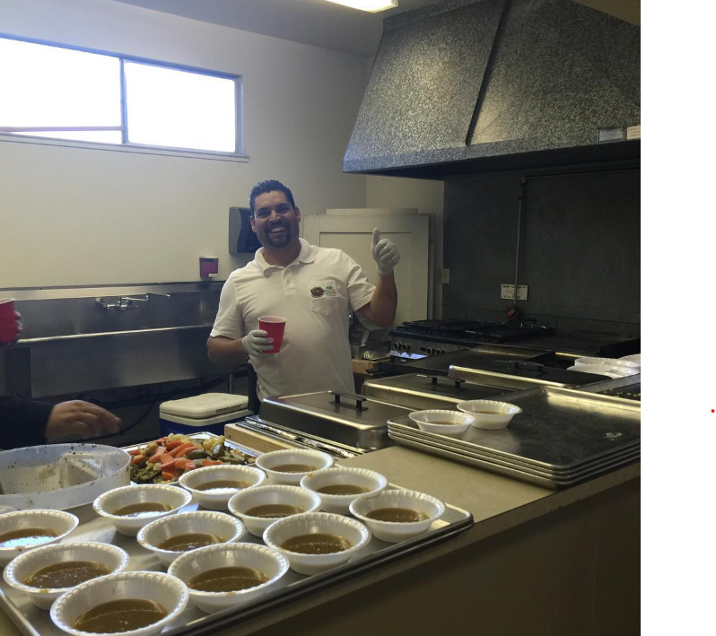
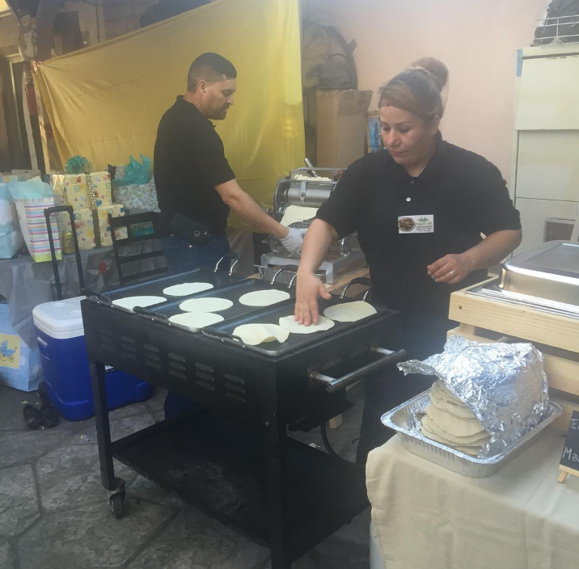
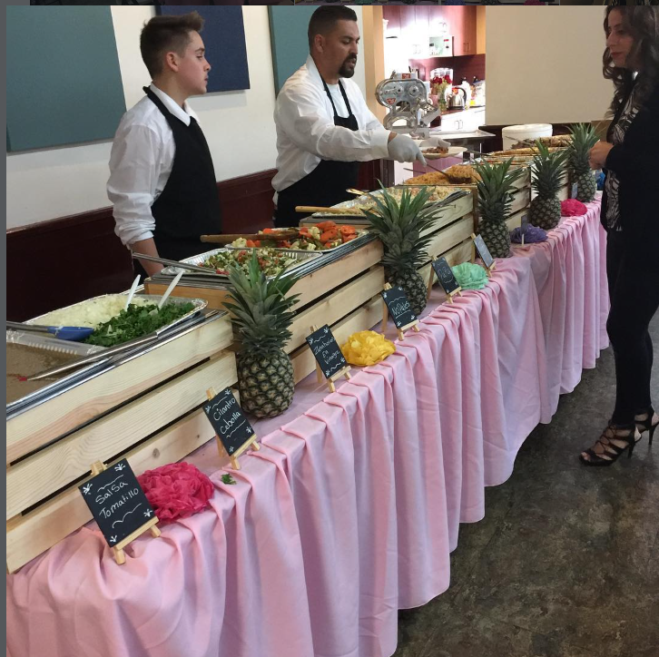

Un camino lleno de trabajo, fe y pasión.
◈
-

2015
Nuestros primeros eventos.
-

2016
Creciendo con cada familia que confió en nuestro trabajo.
-

2017
Más eventos, más experiencia, misma pasión.
-
2019
Bodas y celebraciones inolvidables.
-

Hoy
Seguir cocinando con amor para nuestra comunidad.